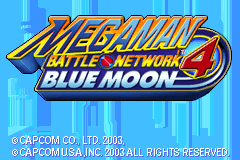

Megaman - Battle Network 4 - Blue Moon (USA)
SRAM 256K
Cartridge Identity
- Game Code
B4BE(FamilyB4B)- Header Title
MEGAMANBN4BM- Maker / Revision
08/ rev0- ROM Size
- 8.0 MiB (8,388,608 B)
- Save Media
SRAM 256K- SHA-256
63ea187c792f4bfcd077f92c3a509fa09ed422993aee9480c39dfdf6a561c5c1- Engine / SDK Group
comm-001(196 families)
Screenshots


ROM Assets, Compression & Audio
- BIOS Compression
- LZ77 (
0x10): 1,096 streams · RLE (0x30): 0 streams - ROM Pointer Tables
- 185 tables (6 pointing to validated compressed streams)
- SDK Backup Tags
SRAM_V113,SRAM_V113
Regional Variants & Revisions (Family B4B)
- Megaman - Battle Network 4 - Blue Moon (Europe) (
B4BP, 8 MiB) - Megaman - Battle Network 4 - Blue Moon (Europe) (Virtual Console) (
B4BP, 8 MiB) - Megaman - Battle Network 4 - Blue Moon (USA) (Virtual Console) (
B4BE, 8 MiB) - Rockman EXE 4 - Tournament Blue Moon (Japan) (
B4BJ, 8 MiB) - Rockman EXE 4 - Tournament Blue Moon (Japan) (Rev 1) (
B4BJ, 8 MiB) - Rockman EXE 4 - Tournament Blue Moon (Japan) (Rev 1) (Virtual Console) (
B4BJ, 8 MiB)